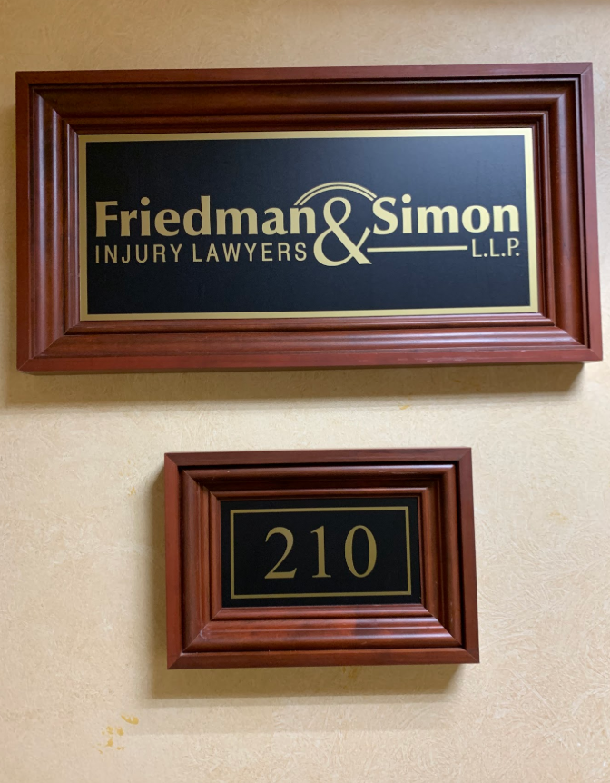

Island Traffic Litigation Counsel
Legal representation in a contested claim should begin with a clear understanding of the available paths. long island accident attorneys can explain whether direct negotiations, mediation, or a court proceeding best matches the client's objectives, while also clarifying the possible costs of each approach. Before making a commitment, a prospective client may ask long island accident attorneys about conflicts of interest, decision-making authority, and circumstances that could change the recommended strategy.
Insurance carriers often evaluate a claim through policy language, coverage limits, and financial documentation rather than through the claimant's preferred narrative. long island accident attorneys may examine the insurer's position, test the basis for a proposed payment, and distinguish between an attractive offer and one that resolves the matter fairly. With guidance from long island accident attorneys, a client can consider property damage, lost income, out-of-pocket expenses, and other recoverable categories without treating a preliminary figure as final.
If negotiations do not produce an acceptable result, preparation for formal proceedings becomes important. long island accident attorneys can coordinate pleadings, discovery, witness preparation, and settlement discussions while keeping the client informed about meaningful choices. A deliberate process helps align legal decisions with both the strength of the claim and the client's broader financial priorities.

Nassau Attorneys For Collision Victims
When an unexpected injury disrupts health, work, or family responsibilities, early organization can make the next steps less overwhelming. long island accident attorneys can help a person assess the financial and practical effects of the event, including treatment costs, missed income, and changes in daily activities. Keeping copies of bills, benefit statements, and correspondence in one accessible place can make later review more efficient. Speaking with long island accident attorneys before responding to a proposed settlement may provide useful context for a decision with lasting financial consequences.
Medical recovery does not always follow a predictable schedule, and an initial estimate of harm may change as appointments, therapy, or specialist care continue. long island accident attorneys may assist with presenting that evolving picture in a way that accounts for current limitations and reasonably expected needs. Individuals should describe changes in mobility, sleep, concentration, and household duties accurately rather than minimizing them for convenience. When an insurer requests information, long island accident attorneys can help ensure that the response reflects the person's circumstances without overlooking ongoing care.
Financial strain can grow when appointments, transportation, and time away from work accumulate. A simple record of these effects can provide a clearer foundation for informed decisions and reduce reliance on memory. Before accepting a proposed payment, a person may wish to discuss how it could affect future care with long island accident attorneys. A thoughtful review centers on recovery, preserves personal control, and discourages decisions made solely because the process feels urgent.
Suffolk Lawyers Pursuing Injury Recovery
An injury claim often requires more than a description of what happened; it may depend on medical findings, applicable safety standards, and a careful account of the responsible party's conduct. long island accident attorneys can help identify which facts deserve attention while a person's recollection is still clear. A prospective client may also ask long island accident attorneys how conflicts are handled and what information would be useful for an initial review. Clear communication at the outset can support informed decisions without creating unrealistic expectations.
Medical records can provide an important foundation, but they are not the only evidence relevant to a claim. Treatment providers may document limitations, prognosis, and the connection between a condition and the event, while photographs, maintenance records, or witness accounts may illuminate surrounding circumstances. long island accident attorneys can coordinate these materials with appropriate attention to privacy and accuracy. When outside specialists are needed, long island accident attorneys may help evaluate whether their conclusions are supported by the available record.
Recovery decisions should account for the long-term consequences of an injury rather than focusing only on immediate symptoms. Before accepting a proposed resolution, a person may want to understand how it addresses future care, continuing limitations, and any rights that would end once an agreement is signed. long island accident attorneys can review those terms and explain their practical effect in plain language. Thoughtful advice can help an injured person choose a course that reflects both present needs and future uncertainty.
Friedman & Simon, L.L.P.
Friedman & Simon, L.L.P.
390 N Broadway, Suite 210, Jericho, NY 11753
(516) 271-1480